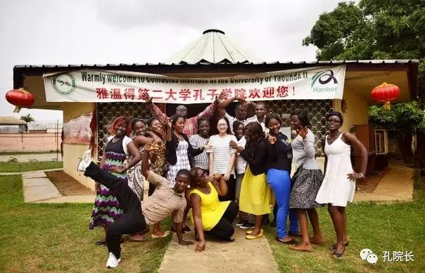
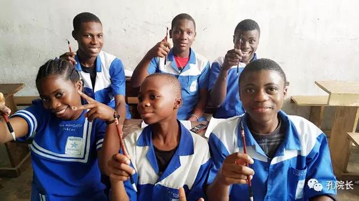
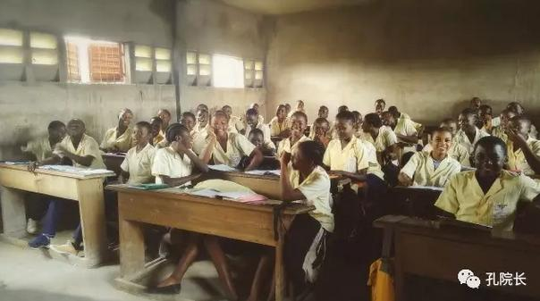
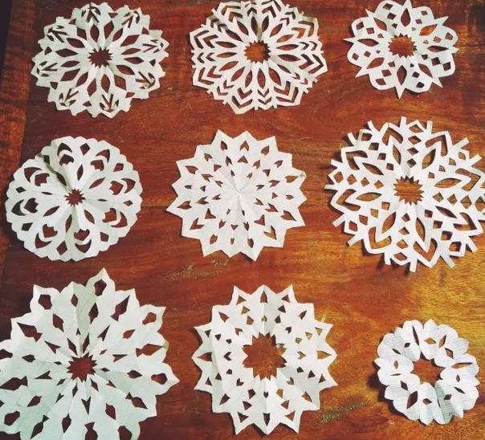
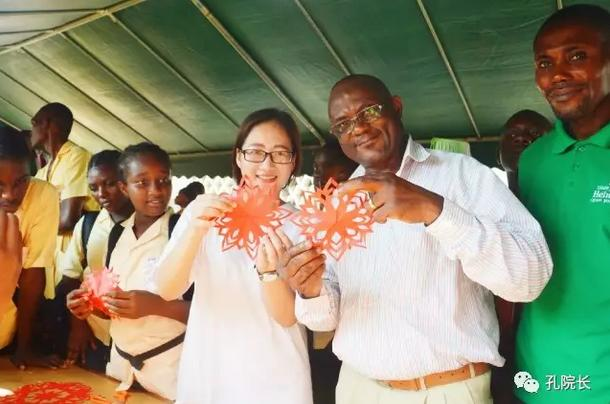
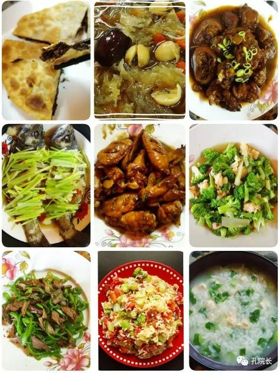
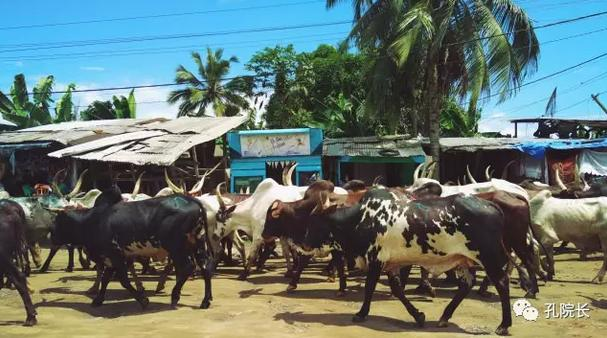
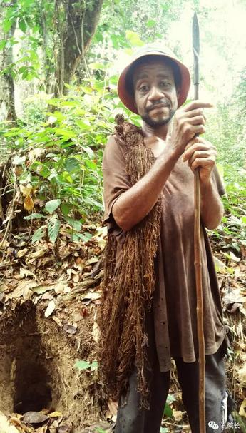

每日一篇——志愿者感悟/ 在最好的年纪遇到“你”——记喀麦隆志愿者生活
 821
821
来源：原创 作者：张琳芳
小的时候，我就很喜欢看电视，看到美丽而又神秘的非洲大陆，心驰神往。那时我就在心中埋下了小小希望的种子，长大后要去非洲看一看。
终于在25岁这一年，在自己最好的年纪，因为与汉语国际教育的缘分让我真正踏上了这片向往已久的土地。我来到了非洲西部的喀麦隆，开始了我的汉语教学和中华文化传播之路，也开始了一次非洲风土人情体验之旅。这一次，我终于不用通过电视，而是可以自己亲眼看到并且亲身感受最真实的非洲，感觉有点不可思议。

与学生合影
刚来喀麦隆的时候，因为第一次离开家这么远，满怀期待的同时又有着一点点焦虑，没想到后来自己竟然可以适应得这样好，也许是因为雅温得这座城市有着让人倍感亲切的魅力吧。舒适宜人的气候、随处可见的三角梅和芒果树、偶尔在路上碰到的黄皮肤的中国人以及温馨的志愿者公寓，都让我有种身在国内的错觉；但当我走在路上，听着那一声声发音并不标准却很真诚的“你好”，看着热情的喀麦隆人民向我露出友好的微笑，望着天空又厚又低又变幻莫测的白云，闻到路边或者楼下居民家里飘来的喀餐香味，才意识到我已经在非洲，站在喀麦隆这片土地上了，这种感觉很奇妙，也很美好。现在我已经在喀麦隆生活了一年多，概括来说，生活简单而不乏味，快乐并且充实。
【教学初体验】
作为一名汉语志愿者，汉语教学是我的首要工作，也是最重要的工作。第一年我主要负责本部四级班综合课的教学，同时接任五级班综合、口语课的教学。学生的学习积极性非常高，求知欲也很强，再加上学生的文化程度较高，对我来说是一个不小的考验。为了让学生能够更好地理解学习内容，满足学生对学习汉语的渴求，每节课我都会花很长时间认真备课，让学生能够清楚地掌握每个生词、每个语言点。

学生第一次写书法
我跟学生的关系可以说是亦师亦友，课下经常跟学生一起聊天、开开玩笑，学生也很愿意跟我分享生活中发生的趣事以及遇到的困难。我们还在WhatsApp上建立了一个班级群，交流我们的日常生活，共同讨论汉语问题。这些交流让我更加了解喀麦隆，同时也让学生从更多方面了解中国人的思维方式。我相信真诚是人与人之间交往最好的催化剂，有付出总会有回报。五级班教学结束后，班里大部分学生成功申请到了留学中国的奖学金，现在回想起那时跟学生在一起的日子依旧让我感到放松和满足。

与学生第一次见面
除了日常教学以外，我还参加了雅二大广播节目《空中汉语》的撰稿和播音工作。第一次去广播站录音就让我爱上了播音的感觉，每次播音都像是我跟广播的一次美丽邂逅，尤其当我想到通过广播可以让更多的喀麦隆人知道、了解并进一步学习汉语，进而了解中华文化时，这感觉就更加奇妙，也很满足和自豪。

学生的剪纸作品
担任志愿者的第二年，我来到了喀麦隆的经济首都杜阿拉。就跟这个城市火热的天气一样，迎接我的是同样热火的新生活和教学上的新挑战。我所在的BONCHOUO 双语学校是2016年6月份刚合作设立的新教学点，我负责该学校八个班级一大群熊孩子的汉语教学工作。第一天到学校，当校长把我介绍给学生们的时候，学生们那难以抑制的兴奋和开心让我受宠若惊，也给了我很大的鼓励。
由于是零基础的学生，因此备课的时候不需要在教学内容上花太多的时间。但是为了能让学生更好地理解学习内容，并且始终保持对学习汉语的热情，每节课我都会花很长时间来思考教学方法，搜罗好玩实用的课堂游戏，让课堂更加生动有趣，让学生快乐地学习汉语。

校园开放日活动
【生活“心”感悟】
第一年刚来的时候，没有想象中的不适应，相反一切都适应得特别好。跟其他几名志愿者一起生活在志愿者的“小家”里，虽然从买菜、做饭、洗衣服到打扫、整理、倒垃圾，每一件看似简单实则费劲的事都得亲力亲为、亲自打理。很多事情需要独自面对，学会独自成长；但是我们并不孤单，大家一起做饭一起聊天，共同探讨汉语教学，渐渐冲淡了离家在外的孤独感，这样的生活却也感觉温馨并且快乐。
父母或许会担心我们不能照顾好自己，但事实证明我们可以把自己照顾得很好。空闲的时候我也喜欢琢磨怎么做菜，记得刚来那会儿只会简单炒几个小菜，现在对我来说一般家常菜或者擀面、包饺子、烙饼都不在话下，每天给自己做点好吃的也是一件很幸福的事情。

自己动手，丰衣足食
到杜阿拉后，我跟另外一名汉语老师一起来到远离市区的一个小镇上，两人承担这里的教学工作。两个人的小镇生活没有了之前的热闹，就这样每天上上课，感受当地居民简单的生活。每天看着路过的牛群，走过一路的野草小花，偶尔种种菜，逗逗邻居家的小孩儿，“乡村女教师”的生活也有种岁月静好的满足。

杜阿拉小镇路边的牛群
当然，来到喀麦隆的另一个愿望就是好好了解当地的文化。这一年多我也适应了跟当地人打交道，见到他们也会热情地说一声“Bonjour”；习惯了跟许多当地人一起挤出租车，有时还会跟司机砍砍价；会主动去尝试当地的食物，虽然碰到过几次黑暗料理；看过喀麦隆小姐选美比赛，也参加过中国服饰走秀；参观过喀麦隆国家博物馆，了解当地历史和教育制度，也知道了当地“一夫多妻”的文化风俗；每天在感受当地人简单朴实的小幸福，也曾前往丛林深处寻访过俾格米人；现在的我周末偶尔也会去跑跑步，跳跳当地的广场舞……

丛林深处的小矮人，卑格米人
回想这一年多的时光，庆幸自己当初做了这个选择，在家人担心和朋友都不太看好的情况下，我毅然选择来到了非洲，来到这片自己向往已久的神秘大陆。在这里能够从事自己喜欢的工作，让更多人爱上汉语、了解中华文化，能够在最好的年纪恣意挥洒青春，实现自己的价值，相信这将是自己人生路上最独特的一道风景。
作者简介：
在最好的年纪恣意挥洒青春，实现自己的价值，相信这将是自己人生路上最独特的一道风景。
——喀麦隆雅二大志愿者 张琳芳